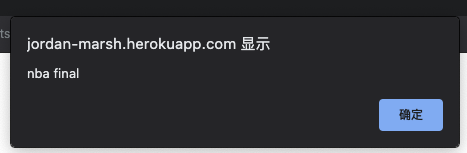
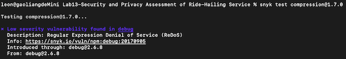
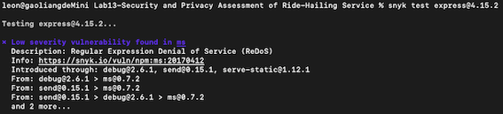
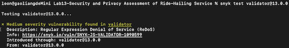

A Security Assessment of Ride-Hailing Service
1. Introduction
The Ride-Hailing Service is a product that could display nearby vehicles for passengers on the map. It mainly includes the following five functions:
- Show the nearby vehicles for a given passenger on the map, and store the ride request from a passenger into a database;
- Update the position infos for a vehicle that is in the database;
- Display a list all passenger records for a given username if records exist in the database;
- Display a list all vehicle records for a given username if records exist in the database;
- Display a list all passenger records if records exist in the database;
I am hired as a security consultant to document and resolve the security and privacy issues of the Ride-Hailing Service.
2. Methodology
Since we already have the server-vuln.js file, we can use a static application testing (SAST) tool called "nodejsscan" (https://github.com/ajinabraham/NodeJsScan) to find insecure code patterns using simple pattern matcher from "libsast" and syntax-aware semantic code pattern search tool "semgrep".
In addition, we can use curl to test if there exist XSS issues on the server side.
Finally, we want use the tool "snyk" (https://github.com/snyk/snyk) to find the known vulnerabilities in open-source dependencies.
3. Abstract of Findings
There exists many vulnerabilities of the Ride-Hailing Service, the most common and severe are:
- Cross-Site Scripting (XSS)
- SQL injection (SQLi)
- Open-source vulnerabilities
If an attacker exploits XSS vulnerabilities, they could perform malicious actions like account tampering, data theft, remote control, or even malware distribution.
If an attacker exploits SQLi vulnerabilities, they could pull the list of all tables in the databases and then retrieve any information they want. Even worse, they are able to delete all the information in the database.
If an attacker exploits Open-source vulnerabilities, they can put in malicious code to steal/compromise users data.
4. Issues Found
| Issue |
Location |
Severity of issue |
Description of issue |
Proof of vulnerability |
Resolution |
| Cross-Site Scripting |
http://jordan-marsh.herokuapp.com/
server-vuln.js line number: 26
|
High.
The attacker could perform malicious actions
like account tampering, data theft, remote control,
or even malware distribution.
|
Using curl to post a script tag as a parameter to visit the POST rides/ method,
we succesfully insert the script tag into database.
 |
When we try to dispaly all passenger records,
the page alerts the message we just inserted into the database.
 |
Validating and sanitizing input from users to
ensure it only contains acceptable characters
that cannot be used to launch XSS attracks. |
| SQL injection |
http://jordan-marsh.herokuapp.com/
passenger.json?username=kimi or '1'='1'
server-vuln.js line number: 72
|
High.
The attacker could get all tables in the databases
and then retrieve any information they want.
Even worse, they could delete all the information
in database.
|
Instead of using a username to get relevant passenger records,
we pass the parameter: username=kimi or '1'='1'.
This could get all the passenger records in the database.
 |
We could get all the passenger records by adding or '1'='1',
because this would cause the SQL language always be true.
Besides, we can delete all the passenger records by adding ;drop table passengers. |
To mitigate SQL injections, developers should always
perform proper input validation. When input from the user
fails the validation checks, the SQL query is not executed.
Another way of preventing SQL injection is using parameterized
queries or prepared statements instead of concatenations.
Parameterized queries are used to abstract
the SQL syntax from the input parameters. |
| SQL injection |
http://jordan-marsh.herokuapp.com/
vehicle.json?username=vehicle or '1'='1'
server-vuln.js line number: 87
|
High.
The attacker could get all tables in the databases
and then retrieve any information they want.
Even worse, they could delete all the information
in database.
|
Instead of using a username to get relevant vehicle records,
we pass the parameter: username=kimi or '1'='1'.
This could get all the vehicle records in the database.
 |
We could get all the vehicle records by adding or '1'='1',
because this would cause the SQL language always be true.
Besides, we can delete all the vehicle records by adding ;drop table vehicles. |
To mitigate SQL injections, developers should always
perform proper input validation. When input from the user
fails the validation checks, the SQL query is not executed.
Another way of preventing SQL injection is using parameterized
queries or prepared statements instead of concatenations.
Parameterized queries are used to abstract
the SQL syntax from the input parameters. |
| Origin Validation Error |
server-vuln.js line number: 17 and 42 |
Medium.
The vulnerability allows a remote attacker
to bypass implemented security restrictions.
|
Access-Control-Allow-Origin response header is set
to "*". This will disable CROS Same Origin Policy restrictions.
|
Using tool "nodejsscan" we get:
 |
It's important to limit the scope of trusted websites. |
| Regular Expression Denial of Service |
package.json validator-13.0.0
package.json express-4.15.2
package.json compression-1.7.0
|
Medium and low.
ReDoS attack exploits the fact that most
Regular Expression implementations may reach
extreme situations that cause them to work
very slowly (exponentially related to input size).
An attacker can then cause a program using
a Regular Expression to enter these extreme
situations and then hang for a very long time.
|
By using the tool "snyk", we can test each package in the package.json file.
|
Using tool "snyk" we get:



|
Package managers (e.g npm) helps manage to a
certain degree these vulnerabilities from packages
installed from npm by providing vulnerability reports
and providing a fix for them. |
5. Conclusion
Adopting good coding practices can secure applications against common JavaScript vulnerabilities on both the client-side and server-side. When using JavaScript, always follow the following key guidelines for enhanced security:
- Never trust user input
- Sanitize user input
- Define a content security policy
- Encrypt data transmitted between the client and the server
- Conduct regular scans on your codebase
Following these best coding practices is usually the first step for securing your web applications.
Besides, by using security measures provided by package managers ( such as npm ) and security solutions, companies can stay ahead of the vulnerabilities which arise from using these open-source packages.